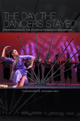

Exploring the ways that cultural celebrations challenge official accounts of the past while reinventing culture and history for Filipino American college students
Exploring the ways that cultural celebrations challenge official accounts of the past while reinventing culture and history for Filipino American college students


 Exploring the ways that cultural celebrations challenge official accounts of the past while reinventing culture and history for Filipino American college students
Exploring the ways that cultural celebrations challenge official accounts of the past while reinventing culture and history for Filipino American college students

|  |
The Day the Dancers StayedPerforming in the Filipino/American DiasporaTheodore S. Gonzalvespaper EAN: 978-1-59213-729-9 (ISBN: 1-59213-729-6) |
"Theo Gonzalves’ brilliant riff on the modes of cultural productions adroitly taps into new realms of discourse, locating multiple sites where cultural memories are crafted, authenticated, challenged, and reclaimed through the aesthetics of performance. Elegantly written and grounded in historical swirls complicated and connected by U.S. colonial policies in the Philippines, The Day the Dancers Stayed delves into Filipino/a experiences and the tenets of a sustained vision of nation/nationhood that marks the arrival of a talent whose remarkable work is a necessary text in cultural analyses."
—Linda España-Maram, California State University, Long Beach
Pilipino Cultural Nights at American campuses have been a rite of passage for youth culture and a source of local community pride since the 1980s. Through performances—and parodies of them—these celebrations of national identity through music, dance, and theatrical narratives reemphasize what it means to be Filipino American. In The Day the Dancers Stayed, scholar and performer Theodore Gonzalves uses interviews and participant observer techniques to consider the relationship between the invention of performance repertoire and the development of diasporic identification.
Gonzalves traces a genealogy of performance repertoire from the 1930s to the present. Culture nights serve several functions: as exercises in nostalgia, celebrations of rigid community entertainment, and occasionally forums for political intervention. Taking up more recent parodies of Pilipino Cultural Nights, Gonzalves discusses how the rebellious spirit that enlivened the original seditious performances has been stifled.
Excerpt available at www.temple.edu/tempress
"With acumen, verve, and a politics of style that effect an important counter-appropriation of performance studies in today's American academy, The Day the Dancers Stayed offers a differently historicized analysis of the processes by which cultural—kinetic, aural, visual—knowledges get produced, repeated, and transformed. Gonzalves shows us or, more precisely and more crucially, reminds us how and why culture dies. And how it always lives on."
—Sarita Echavez See, University of Michigan
Also available in e-book
Acknowledgments
Prologue
Introduction
1. The Art of the State: Inventing Philippine Folkloric Forms (Manila, 1934)
2. “Take It from the People”: Dancing Diplomats and Cultural Authenticity (Brussels, 1958)
3. Dancing into Oblivion: The Pilipino Cultural Night (Los Angeles, 1983)
4. Repetitive Motion: The Mechanics of Reverse Exile (San Francisco, 1993)
5. Making a Mockery of Everything We Hold True and Dear: Exploring Parody with Tongue in a Mood’s PCN Salute (San Francisco, 1997)
Conclusion
Epilogue: Memoria
Notes
Bibliography
Index
 | Theodore S. Gonzalves is Associate Professor of American Studies at the University of Hawai`i at Manoa. |
Asian American Studies
American Studies
Music and Dance
© 2015 Temple University. All Rights Reserved. This page: http://www.temple.edu/tempress/titles/1947_reg.html.